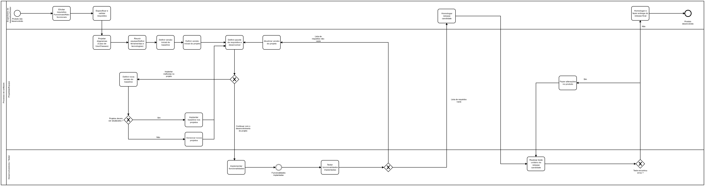
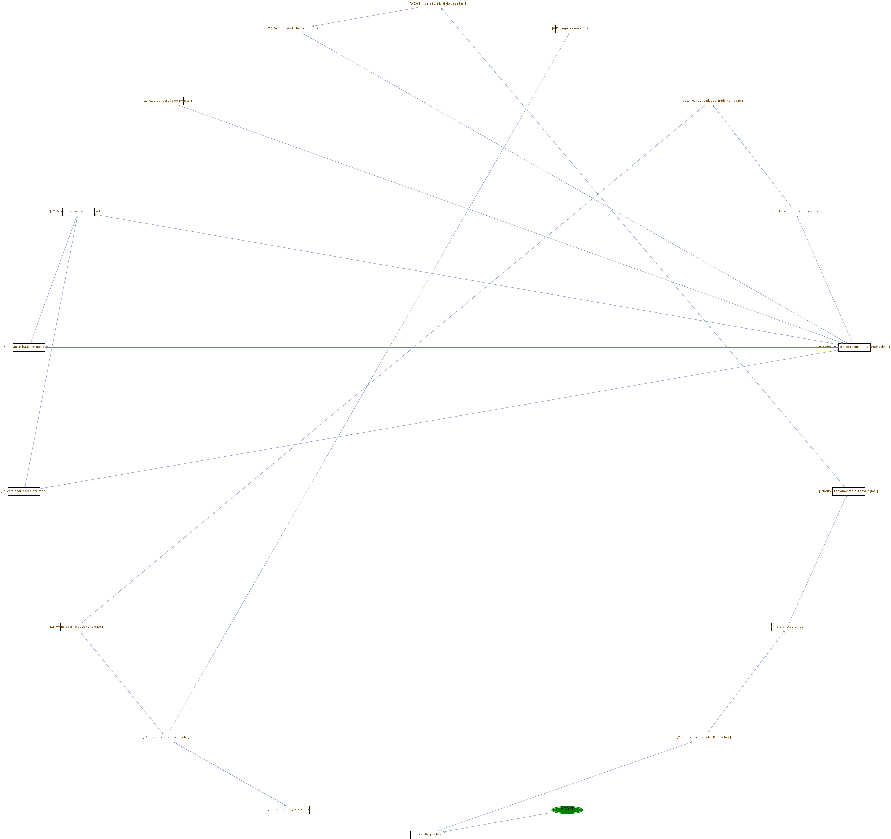

Este documento faz a especificação de um processo de software no qual resulta em um produto de software desenvolvido. Este produto de software será um programa de gerenciamento de estoque para itens de mercado. Inclui as atividades, artefatos e papéis bem como a interligação entre esses elementos, além dos templates e guidances que auxiliam na realização do mesmo. created: Fri Aug 14 12:28:47 BRT 2020 last update: Sun Sep 06 15:53:56 BRT 2020 Authors: Anderson Tonon[ awst@live.com] Edilson Junior[ nantes.junior@gmail.com] João Vitor Ferreira[ jvitorferreira@hotmail.com] Ricardo Fabris[ rick-fabris@hotmail.com]


Licence MIT - Alexandre L'Erario (alerario@utfpr.edu.br)